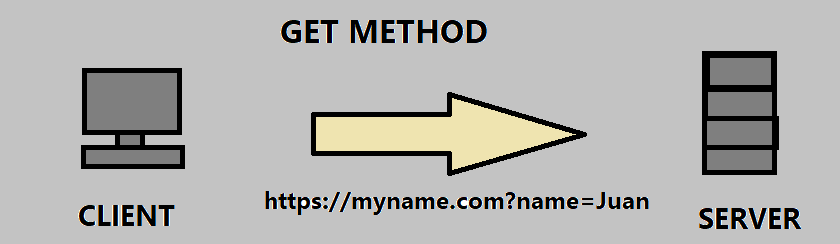
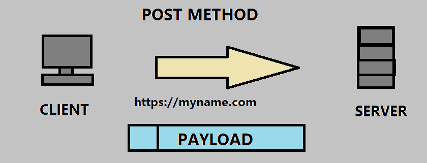

Request Methods
GET
It is the method that returns the whole HTML document inclding the code.

The URL of this method is much longer than POST method ( which will be discussed later) because the message is included in the URL.
POST
Same with GET method, but the URL is much shorter since the message is included in the body not in the URL.
Returns an error if you resend the request.

HEAD
Used when requesting for the metadata only without requiring for a payload.
PUT
Generates a resource to the server.
DELETE
Removes a resource in the server.
OPTIONS
Lets you know what you are allowed to do.
TRACE
Request that returns the received message.
Assures you that your message is not modified.
CONNECT
Establishes a secure connection and a tunnel.
Status Codes
HTTP status codes are divided into 5 different classes (1xx, 2xx, 3xx, 4xx, and 5xx)
1xx - Informational codes
- 100 - Continue
- 101 - Switching protocols
- 102 - Processing(WebDAV)
2xx - Success
- 200 - OK
- 201 - Created
- 202 - Accepted
- 203 - Non-Authoritative Information
- 204 - No Content
- 205 - Reset Content
- 206 - Partial Content
- 207 - Multi Status (WebDAV)
- 226 - IM used (HTTP Delta encoding)
3xx - Redirection
- 300 - Multiple Choices
- 301 - Moved Permanently
- 302 - Found
- 303 - See Other
- 304 - Not Modified
- 305 - Use Proxy
- 306 - Unused
- 307 - Temporary Redirect
- 308 - Permanently Redirect
4xx - Client error
- 400 - Bad Request
- 401 - Unauthorized
- 402 - Payment Required
- 403 - Forbidden
- 404 - Not Found
- 405 - Method Not Allowed
- 406 - Not Acceptable
- 407 - Proxy Authentication Required
- 408 - Request Time-out
- 409 - Conflict
- 410 - Gone
- 411 - Length Required
- 412 -Precondition Failed
- 413 - Request Entity Too Large
- 414 - Request-URI Too Large
- 415 - Unsupported Media Type
- 416 - Requested range not satisfiable
- 417 - Expectation Failed
- 418 - “I’m a teapot”
- 421 - Misdirected Request
- 422 - Unprocessable Entity (WebDAV)
- 423 - Locked (WebDAV)
- 424 - Failed Dependency (WebDAV)
- 426 - Upgrade Required
- 428 - Precondition Required
- 429 - Too Many Requests
- 431 - Request Header Fields Too Large
- 451 - Unavailable for Legal Reasons
5xx - Server error
- 500 - Internal Server Error
- 501 - Not Implemented
- 502 - Bad Gateway
- 503 - Service Unavailable
- 504 - Gateway Timeout
- 505 - HTTP version not supported
- 506 - Variant Also Negotiates
- 507 - Insufficient Storage
- 508 - Loop Detected (WebDAV)
- 510 - Not Extended
- 511 - Network Authentication Required
Response Messages
Message headers contain the details on how they are going to communicate.
GENERAL HEADER FIELDS (Based in RFC 2616)
- Cache Control
- Date
- Pragma
- Trailer
- Transfer-encoding
- Upgrade
- Via
- Warning